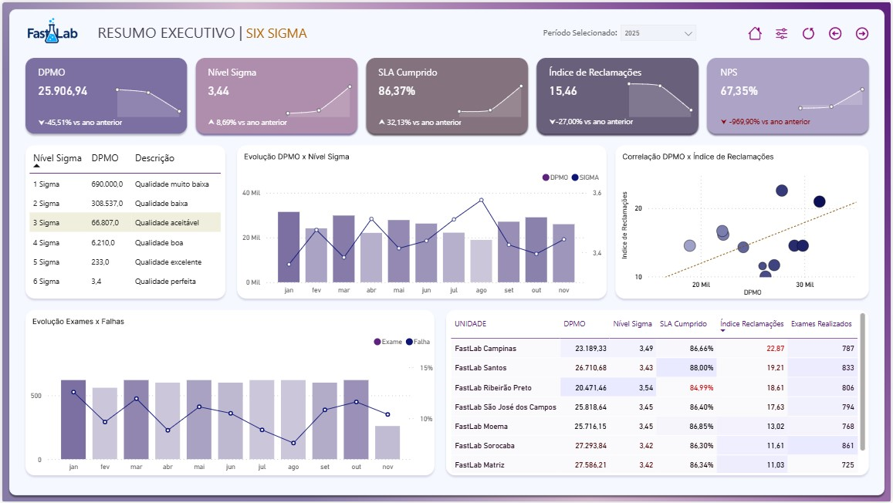

Sigma FastLab - Dashboard Power BI
Ver no Power BI
Repositorio
Capa - Visao geral do Sigma FastLab

Pagina 1 - KPIs e operacoes
Pagina 2 - Tendencias e analise
 Pagina 2 - Tendencias e analise
Pagina 2 - Tendencias e analise